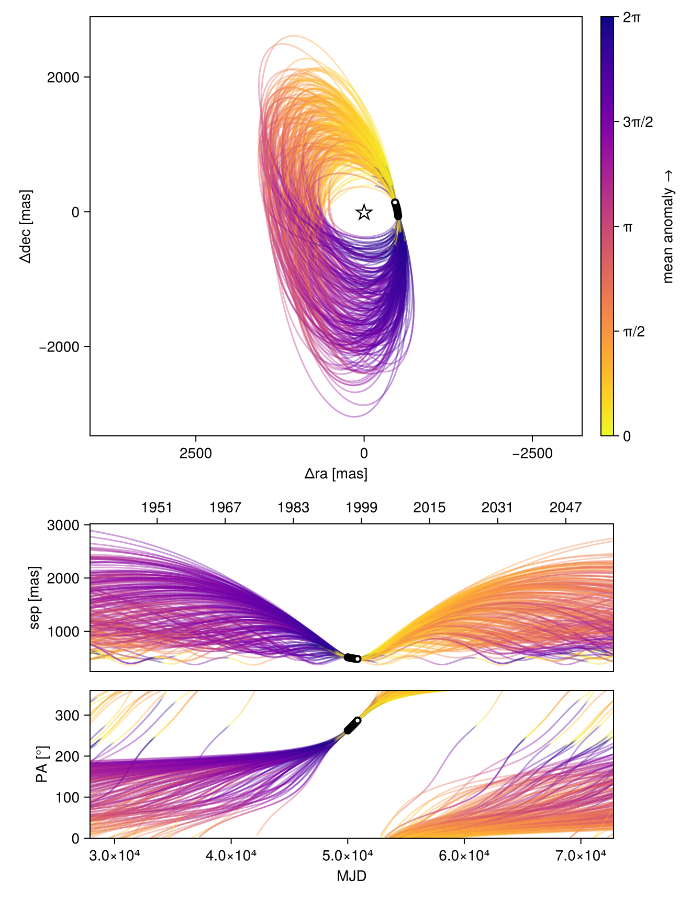
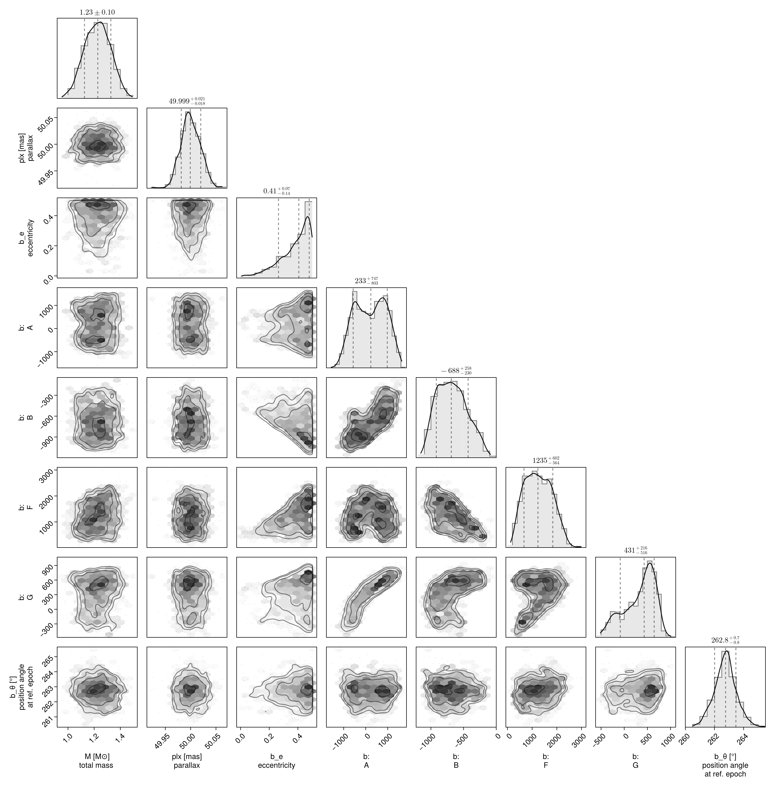
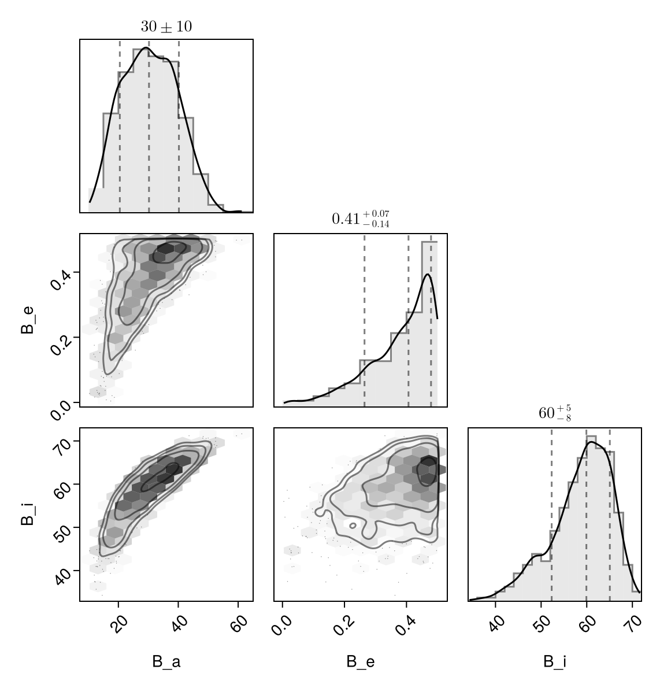

Fit with a Thiele-Innes Basis
This example shows how to fit relative astrometry using a Thiele-Innes orbital basis instead of the traditional Campbell basis used in other tutorials. The Thiele-Innes basis is more suitable then Campbell for fitting low-eccentricity orbits, because it does not have the issues where ω, Ω, and tp become degenerate as eccentricity and/or inclination fall to zero.
At the end, we will convert our results back into the Campbell basis to compare.
using Octofitter
using CairoMakie
using PairPlots
using Distributions
astrom_like = PlanetRelAstromLikelihood(
(epoch = 50000, ra = -505.7637580573554, dec = -66.92982418533026, σ_ra = 10, σ_dec = 10, cor=0),
(epoch = 50120, ra = -502.570356287689, dec = -37.47217527025044, σ_ra = 10, σ_dec = 10, cor=0),
(epoch = 50240, ra = -498.2089148883798, dec = -7.927548139010479, σ_ra = 10, σ_dec = 10, cor=0),
(epoch = 50360, ra = -492.67768482682357, dec = 21.63557115669823, σ_ra = 10, σ_dec = 10, cor=0),
(epoch = 50480, ra = -485.9770335870402, dec = 51.147204404903704, σ_ra = 10, σ_dec = 10, cor=0),
(epoch = 50600, ra = -478.1095526888573, dec = 80.53589069730698, σ_ra = 10, σ_dec = 10, cor=0),
(epoch = 50720, ra = -469.0801731788123, dec = 109.72870493064629, σ_ra = 10, σ_dec = 10, cor=0),
(epoch = 50840, ra = -458.89628893460525, dec = 138.65128697876773, σ_ra = 10, σ_dec = 10, cor=0),
)
@planet b ThieleInnesOrbit begin
e ~ Uniform(0.0, 0.5)
A ~ Normal(0, 10000) # milliarcseconds
B ~ Normal(0, 10000) # milliarcseconds
F ~ Normal(0, 10000) # milliarcseconds
G ~ Normal(0, 10000) # milliarcseconds
θ ~ UniformCircular()
tp = θ_at_epoch_to_tperi(system,b,50000.0) # reference epoch for θ. Choose an MJD date near your data.
end astrom_like
@system TutoriaPrime begin
M ~ truncated(Normal(1.2, 0.1), lower=0)
plx ~ truncated(Normal(50.0, 0.02), lower=0)
end b
model = Octofitter.LogDensityModel(TutoriaPrime)LogDensityModel for System TutoriaPrime of dimension 9 with fields .ℓπcallback and .∇ℓπcallback
We now sample from the model as usual:
using Random
Random.seed!(0)
results = octofit(model)Chains MCMC chain (1000×24×1 Array{Float64, 3}):
Iterations = 1:1:1000
Number of chains = 1
Samples per chain = 1000
Wall duration = 5.74 seconds
Compute duration = 5.74 seconds
parameters = M, plx, b_e, b_A, b_B, b_F, b_G, b_θy, b_θx, b_θ, b_tp
internals = n_steps, is_accept, acceptance_rate, hamiltonian_energy, hamiltonian_energy_error, max_hamiltonian_energy_error, tree_depth, numerical_error, step_size, nom_step_size, is_adapt, loglike, logpost, tree_depth, numerical_error
Summary Statistics
parameters mean std mcse ess_bulk ess_tail ⋯
Symbol Float64 Float64 Float64 Float64 Float64 Fl ⋯
M 1.2252 0.0976 0.0045 480.5786 475.1670 0 ⋯
plx 50.0002 0.0194 0.0006 1215.1808 786.9313 1 ⋯
b_e 0.3770 0.1097 0.0061 288.7713 310.1121 1 ⋯
b_A 209.6204 693.6488 71.2172 105.1002 320.8002 1 ⋯
b_B -674.7591 227.1664 21.5922 125.6711 364.4687 1 ⋯
b_F 1254.1991 535.0824 35.8886 210.0283 303.3007 1 ⋯
b_G 332.8872 331.5432 33.7659 127.4079 247.9852 1 ⋯
b_θy -0.1278 0.0191 0.0007 694.9844 487.1360 1 ⋯
b_θx -1.0025 0.0960 0.0036 718.1300 635.1413 1 ⋯
b_θ -1.6974 0.0132 0.0005 759.2602 575.9228 1 ⋯
b_tp 13090.2867 33590.5535 2056.4326 340.5502 709.1519 1 ⋯
2 columns omitted
Quantiles
parameters 2.5% 25.0% 50.0% 75.0% 97.5 ⋯
Symbol Float64 Float64 Float64 Float64 Float6 ⋯
M 1.0384 1.1544 1.2277 1.2949 1.408 ⋯
plx 49.9665 49.9878 49.9993 50.0132 50.037 ⋯
b_e 0.0964 0.3155 0.4065 0.4663 0.496 ⋯
b_A -1003.5546 -400.6612 233.2457 800.9804 1382.185 ⋯
b_B -1049.8944 -860.7351 -687.9765 -517.6582 -213.539 ⋯
b_F 353.8243 821.6572 1235.1170 1671.8264 2268.717 ⋯
b_G -363.8930 109.4230 430.8010 589.5451 777.685 ⋯
b_θy -0.1681 -0.1403 -0.1269 -0.1148 -0.092 ⋯
b_θx -1.2075 -1.0695 -0.9964 -0.9355 -0.823 ⋯
b_θ -1.7234 -1.7055 -1.6971 -1.6898 -1.670 ⋯
b_tp -51236.1353 -14278.2750 15056.2107 48484.2611 49826.667 ⋯
1 column omitted
Notice that the fit was very very fast! The Thiele-Innes orbital paramterization is easier to explore than the default Campbell in many cases.
We now display the results:
octoplot(model,results)
octocorner(model, results, small=false)
Conversion back to Campbell Elements
To convert our chain into the more familiar Campbell parameterization, we have to do a few steps. We start by turning the chain table into a an array of orbit objects, and then convert their type:
orbits_ti = Octofitter.construct_elements(results, :b, :) # colon means all rows1000-element Vector{ThieleInnesOrbit{Float64}}:
ThieleInnesOrbit{Float64}(0.46828072945754046, -20132.3232594953, 1.2439245011195386, 49.98746389845695, -10.161986547723266, -943.9418512482874, 1717.847393154512, 431.6207284691875, -30.496004169660782, -5.5757435461726494, 70351.91666819171, 0.03262006969085942, 1.6617410535755346)
ThieleInnesOrbit{Float64}(0.4906604561864227, 48924.02078062358, 1.1420193889713817, 50.00466153590073, -617.123223592657, -1070.8114470355854, 1694.714527125056, 130.87702758832907, -28.621688472708477, -16.571645681455028, 79481.142998324, 0.028873319356395515, 1.7107465304985636)
ThieleInnesOrbit{Float64}(0.48980658436494506, 48854.53765047334, 1.143967059470866, 49.98644140498118, -647.328807440096, -1070.4108005725604, 1649.9533660145632, 117.13294096594832, -27.6842904520133, -17.25296491255324, 77850.94433562575, 0.02947792662229499, 1.70882472790686)
ThieleInnesOrbit{Float64}(0.2317158398417137, 48122.839657655626, 1.2974326903162405, 49.9838740422922, -631.6209405244733, -593.4444437571481, 543.3260532182352, -278.65439594732925, -5.310498198293309, -13.401752755051035, 24761.718906919465, 0.09267872045670711, 1.2661767178566465)
ThieleInnesOrbit{Float64}(0.21490775113595936, 48173.947073969255, 1.318684585354049, 50.00893878684165, -622.8947108981822, -582.6514530779857, 603.0033911089295, -263.7920178698441, -6.901474178383895, -12.856934165993508, 25101.36467145304, 0.09142468764703637, 1.2439740093251737)
ThieleInnesOrbit{Float64}(0.294883270246608, 48469.47745463909, 1.20455039089221, 49.98124714366407, -616.6551905851055, -670.3534234239562, 949.3571760035551, -198.40524978562246, -14.306686105982722, -12.658807204795533, 37112.3885683782, 0.06183607450578689, 1.3551419839164258)
ThieleInnesOrbit{Float64}(0.2180591154819021, 48189.89497309781, 1.2552934233261535, 50.011858788326975, -585.9802578780013, -665.1319747116463, 694.0628504367461, -158.76786843098583, -8.770515676563065, -13.726114826223371, 28668.793528923856, 0.08004816883161289, 1.248093790495462)
ThieleInnesOrbit{Float64}(0.2981666046470251, 49504.54499843919, 1.1427941800354833, 49.97899136076271, -290.7673825294591, -728.6241775841573, 863.8029750511959, -14.396420845497257, -11.227584813459925, -8.581668540772984, 28966.114014647508, 0.07922652045909497, 1.360029102352472)
ThieleInnesOrbit{Float64}(0.3649152563338098, 49157.53882093516, 1.2077950254516068, 50.00928577776697, -441.39697762179657, -831.2991850736548, 1236.497496768387, 51.4116179416624, -19.93718454374995, -11.803194321987082, 47711.65730463427, 0.04809902976015558, 1.4660102407128823)
ThieleInnesOrbit{Float64}(0.3787515740750041, 9833.546393994126, 1.1796091969383355, 50.02443045019557, 512.1239553727681, -631.6684143476729, 1113.2321884244275, 470.74885739192985, -18.79286259859245, 5.799847453902997, 41653.29670451501, 0.05509490499351505, 1.489739592091687)
⋮
ThieleInnesOrbit{Float64}(0.474566288487009, -23732.223439355774, 1.0950965029667354, 50.03333190342257, -123.29829474340724, -971.2317287418247, 1686.6741343239494, 387.16558881240167, -29.59020010576819, -7.883876452312242, 73745.5890225403, 0.031118938163210246, 1.67522514732869)
ThieleInnesOrbit{Float64}(0.3813232966385197, 47757.164943755284, 1.3036018247797165, 50.024017535066974, -840.2656970713762, -964.4170864397291, 1720.983842847246, 197.18894244035855, -31.32221288524333, -20.875731329679375, 82248.71926829497, 0.027901764854429467, 1.4942242723752035)
ThieleInnesOrbit{Float64}(0.40552572279641197, 49135.84839722159, 1.3037988235577236, 50.01252296005374, -440.7486192451101, -883.3477435887846, 1810.729543249174, 104.44525847962997, -32.35168437335829, -11.002731109060433, 74627.8200188352, 0.030751058037374608, 1.5376336169116416)
ThieleInnesOrbit{Float64}(0.4684547082178229, -11354.16864108284, 1.2381806924728795, 49.98269649004489, 480.250732279083, -786.1125312285898, 1536.04899954627, 583.7643815180019, -27.524448941422015, 4.054246024517198, 62578.593086084846, 0.03667203609779212, 1.6621114457551138)
ThieleInnesOrbit{Float64}(0.4781113391176703, -33558.05684731617, 1.1304440813071355, 50.00579644038935, 1093.2275984024836, -633.1888334977468, 1654.695184302533, 633.3555574420571, -30.83152341745058, 18.261807896208325, 86451.31369294853, 0.026545396785441006, 1.6829245421837453)
ThieleInnesOrbit{Float64}(0.30665706434549833, 48127.759925131744, 1.2463751751088132, 50.02593919841777, -646.6774404604851, -787.8859043380155, 1492.8564577523935, 35.108390256133326, -26.469051758811705, -14.991522084472983, 63159.006469805376, 0.03633503047105516, 1.3727983954984218)
ThieleInnesOrbit{Float64}(0.383244837684503, 47791.882437135304, 1.225128537302073, 50.036416371159135, -855.9337599499543, -904.46134547597, 1388.505397804297, -2.693574844566104, -23.558942353681086, -20.10797665677292, 66198.70478826857, 0.03466660612079886, 1.4975906929720464)
ThieleInnesOrbit{Float64}(0.27753868953106625, 49080.91435645707, 1.296749735146095, 49.98097895084475, -402.6889170526057, -757.4450372454647, 993.7783436034721, 45.75683059140367, -15.23583336795942, -11.424983025259989, 35263.85872911019, 0.06507751866381908, 1.3297798057874324)
ThieleInnesOrbit{Float64}(0.22852444727942253, 48943.678304029076, 1.2922015499446975, 49.98236090603678, -408.6685349971489, -693.0979973617949, 1061.5458568354038, 40.09427441542164, -17.45403237028323, -10.586333498622736, 37174.947804939264, 0.06173201470634042, 1.2619170769020236)Here is one of those entries:
display(orbits_ti[1])We can now make a table of results (and visualize them in a corner plot) by querying properties of these objects:
table = (;
B_a = semimajoraxis.(orbits_ti),
B_e = eccentricity.(orbits_ti),
B_i = rad2deg.(inclination.(orbits_ti)),
)
pairplot(table)
We can also convert the orbit objects into Campbell parameters:
orbits_campbell = Visual{KepOrbit}.(orbits_ti)
orbits_campbell[1]KepOrbit{Float64}
─────────────────────────
a [au ] = 35.9
e = 0.46828073
i [° ] = 59.8
ω [° ] = 260.0
Ω [° ] = 19.4
tp [day] = -20100.0
M [M⊙ ] = 1.24
period [yrs ] : 192.6
mean motion [°/yr] : 1.87
──────────────────────────
plx [mas] = 50.0
distance [pc ] : 20.0
──────────────────────────